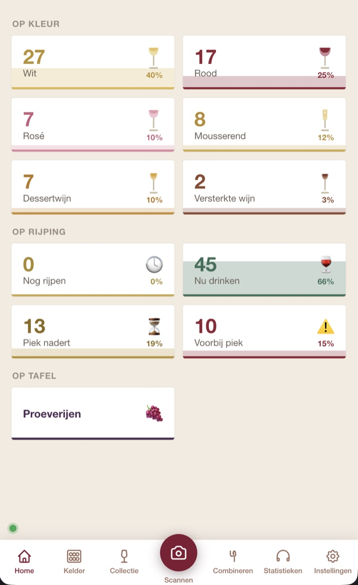
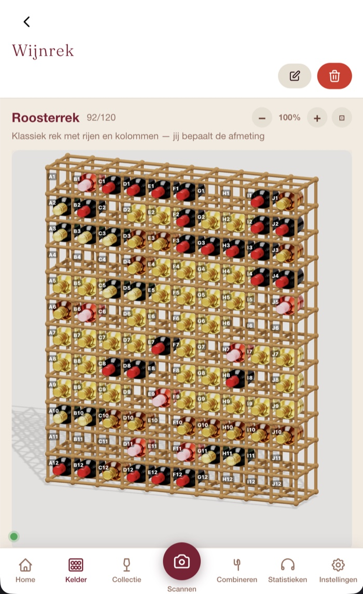
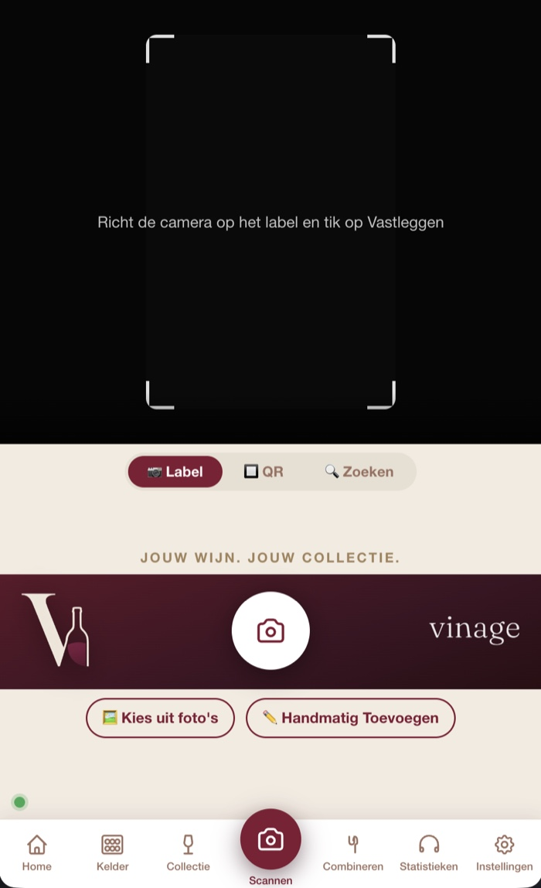
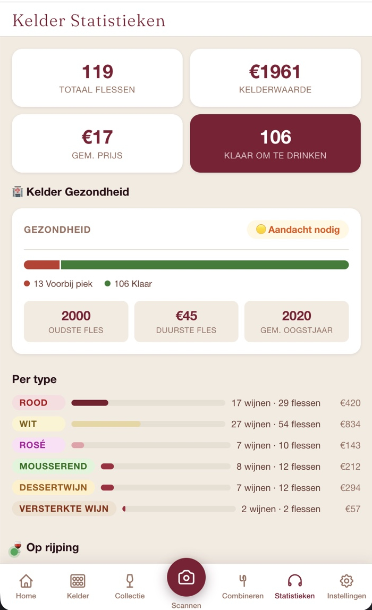

Case Study · AI-Assisted Engineering
Vinage is a Progressive Web App for wine cellar management. It began in February 2026 as a conversation with Claude, grew into something I used every day, and is now a product with paying subscribers. iCulture named it App of the Month in June. I designed, built and shipped all of it myself, with AI-assisted engineering — and that experience has changed how I advise organisations about AI.
The Origin
Two things happened to coincide. I had been experimenting with Claude for a while, and I had been irritated for far longer that I could not find a decent wine app. In February 2026 those two met in a single conversation, and Vinage started.
"I would never have started this before. Not because the idea was new — because building it was out of reach. With AI it was not."
So this was never a learning exercise with a wine app as its excuse, nor a product where the learning was a by-product. It was both, from the first day. The irritation was real, the enjoyment was real, and the question of what it actually takes to build and run a product was real too.
It began as something for myself. After a few months it had become good enough that I wanted to share it, and at that point it turned into a product with subscriptions — which brought along everything that comes with one: payments, accounts, privacy, support, six languages. Building that, and learning it, was every bit as interesting as the app itself.
All in, it amounts to four to five months of full-time work. As a freelancer I was between clients at first, which gave me the time to work on Vinage. With one client after that it became half a week, and once a second client came along it turned into evenings and weekends.
From first conversation to paying subscribers, without a development team.
A live app with real users, real payments and real support — not a prototype.
Named App of the Month by iCulture in June 2026.
Under the Hood
Vanilla JavaScript, no framework, no build step. The app works without an account and without a connection; only the AI label scan needs one. That offline-first behaviour was not a requirement up front — local storage was simply the simplest way to start, and what grew out of it turned out to be worth keeping deliberately. Tested in aeroplane mode.
"Nothing reaches production if a single one of roughly four thousand assertions is red. That gate is the only reason a one-person project can move this fast without becoming reckless."
The App
Screenshots from my own cellar, on production.




The Real Output
The app was never the deliverable. These lessons were — and they are what I now bring into conversations about AI inside IT organisations.
A production issue reported in the evening is fixed, tested and live the next morning. That is not a marginal gain — it changes what is worth fixing at all.
The failures that cost me most were never visible failures. They were answers and tests that looked entirely right.
Once a change took minutes rather than days, I accepted more of them in a day than I could keep track of. The brake that used to come free — because work simply took time — now has to be built in on purpose.
"What I would do differently: I designed two parts of the app as separate worlds. A deliberate choice, and the wrong one — a user kept asking why they did not flow into one another. Correcting that assumption cost a full redesign round: the mistake was in the design, not in the code."
Back to Practice
The thing I say most often about this: it helps enormously to already have solid IT knowledge when you want to build something with AI. I understand what is happening, even where AI does it better than I could — and that is exactly what lets me recognise the things I did not yet know. Someone without that background has no way of telling what AI is and is not doing on their behalf.
"Building has become cheap. Knowing what you are building has not."
That is architecture work, and it is the part that does not get cheaper: which decisions may AI make, what is the source of truth, and when do you stop. Those are the same three questions whether you are framing a wine label or drafting a policy note.
I am currently accountable for the AI policy at a semi-public organisation, including a phased rollout of Microsoft 365 Copilot. That work is markedly better for having built something myself. Policy that does not rest on first-hand experience is a vendor deck. And an AI that is convincingly wrong is more dangerous than one that visibly fails — which is a governance problem long before it is a technical one.